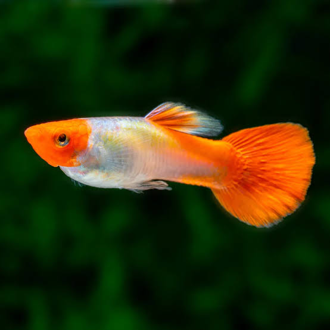

Blonde Koi Guppy
(Poecilia reticulata)
Blonde Koi Guppies contrast a pale blonde body with brilliant koi red caps, fins, and tails. A show line with stable koi patterning and energetic display.
Live Arrival Guarantee on all overnight shipping orders.
Blonde is a recessive base that lightens the body, allowing koi red to dominate the head and fins. This line is selected for clean blonde bases without spotting and dense, opaque red coverage in males.
- verified Keep blonde base pure; cull dark-bodied offspring to maintain line.
- verified Hardy and active; ideal for breeding racks and display tanks alike.
Blonde is a recessive base that lightens the body, allowing koi red to dominate the head and fins. This line is selected for clean blonde bases without spotting and dense, opaque red coverage in males.
- verified Keep blonde base pure; cull dark-bodied offspring to maintain line.
- verified Hardy and active; ideal for breeding racks and display tanks alike.
All livestock is carefully packed with insulated boxes, heat packs in winter and cold packs in summer. We ship via overnight courier to minimize transit stress.
- verifiedLive Arrival Guarantee on all overnight orders when someone is available to receive the package.
- verifiedOrders ship Monday–Wednesday to avoid weekend delays. Tracking is emailed as soon as your box leaves our facility.
- verifiedPlease acclimate slowly using the drip method and photograph any DOA within 2 hours of delivery for guarantee claims.